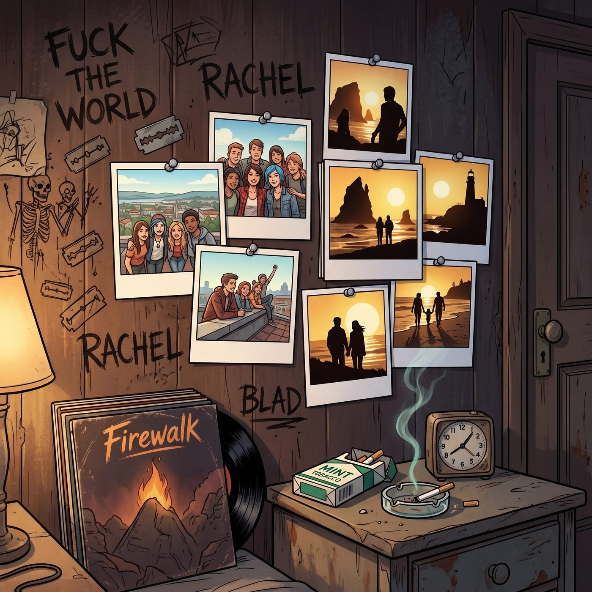
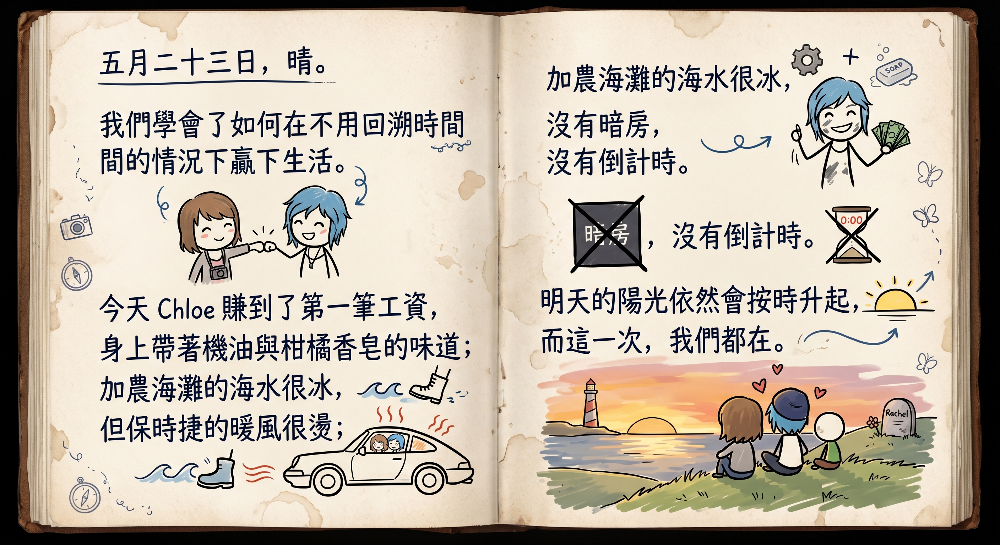

相框與日記



樓下廚房水槽隱約的流水聲與碗碟輕碰聲漸漸平息，二樓臥室的門被 Chloe 用腳跟輕輕帶上。
房間裡依舊瀰漫著熟悉的雪松木屑、舊黑膠唱片以及淡淡薄荷煙草的混合氣息，但牆上那些曾經象徵著憤怒與絕望的暗黑塗鴉旁，不知何時已經多出了幾張色彩明亮的校園天台照片和俄勒岡海岸的日光剪影。
Chloe 脫掉沾著灰塵的外套，直接將整個人砸進柔軟凌亂的大床裡，雙臂枕在腦後，心滿意足地長長舒了一口氣。
Max 走到那張鋪滿拍立得廢片和老相機零件的木質書桌前，擰開了那盞散發著暖黃色光暈的復古小檯燈。她小心翼翼地從口袋裡取出今天在車庫拍下的那張方框相紙——畫面上的藍髮女孩手持沉重的軍規扳手，臉頰蹭著機油，卻笑得比加農海灘的落日還要耀眼。
書桌最顯眼的位置擺著一個原木色的雙面相框，一面是五年前她們在草坪上無憂無慮的合影，而另一面一直空著。
Max 用指腹輕輕撫平相紙的邊緣，將它端端正正地嵌進了乾淨的玻璃夾層中，隨後將相框輕輕轉向床頭的方向。
「這樣一來，妳就算睡著了也在給整座阿卡迪亞灣修發動機。」Max 轉過頭，眼鏡片在檯燈的光暈下折射出溫柔的微芒。
「這叫『守護神氣場』，考菲爾德長官。」Chloe 側過身，單手支著下巴看著相框裡鋥亮的光澤，眼角彎起一個毫無防備的弧度，「有本大師的扳手坐鎮，連暴風雨都不敢靠近這張床半步。」
Max 抿嘴笑了笑，從抽屜裡抽出了那本邊角微卷的厚皮面日記本，剛要坐下，卻被身後一隻手臂猛地攬住了腰。
「先別急著寫作業，長官。」Chloe 的聲音帶著懶洋洋的笑意，整個人從背後欺身湊近，下巴輕輕蹭著 Max 的肩窩，「今天立了功，該有點犒賞。」
「什麼犒賞——」
話還沒說完，Chloe 已經欺身湊近，吻了上去，乾脆利落地把後半句話堵在了唇齒之間。
Max 被這突如其來的動作弄得一愣，手裡的日記本「啪」地一聲滑落在地毯上，還沒來得及撿，整個人已經被打橫抱起，往那張凌亂的大床走去。
「Chloe——」她試圖找回一點話語權，卻只換來另一個更深的吻，把剩下的抗議徹底吞了回去。
被放倒在鬆軟的被褥裡時，Max 終於徹底放棄掙扎，伸手環上 Chloe 的脖頸，任由她帶著白天勞動後洗不乾淨的柑橘皂香氣，還有一絲若有似無的機油味道，將自己徹底淹沒。
日記本被遺忘在地毯上，檯燈的暖黃光暈灑在攤開的空白頁上，映著床邊交疊的剪影和壓得低低的笑聲，斷斷續續地持續了好一會兒，才漸漸安靜下來。
過了許久，Chloe 已經翻身沉沉睡去，呼吸均勻而安穩。Max 這才悄悄從被窩裡爬起來，理了理有些凌亂的衣領，撿起地上的日記本，重新走回書桌前，擰亮那盞小檯燈。
鋼筆尖觸碰在泛黃的紙頁上，發出沙沙的輕微摩擦聲。窗外的太平洋夜潮聲像是這座小鎮沉穩的呼吸，伴隨著身後床墊因翻身而發出的輕微吱呀聲，Max 在空白頁上緩緩寫下今天的落款：
「五月二十三日，晴。
我們學會了如何在不用回溯時間的情況下贏下生活。
今天 Chloe 賺到了第一筆工資，身上帶著機油與柑橘香皂的味道；加農海灘的海水很冰，但保時捷的暖風很燙；沒有暗房，沒有倒計時。
明天的陽光依然會按時升起，而這一次，我們都在。」
寫下最後一個句號時，身後傳來了 Chloe 均勻而安穩的呼吸聲。Max 輕輕合上日記本，伸手熄滅了檯燈，只留下窗外銀色的月光，靜靜灑在床頭那張定格著大笑與重生的照片上。